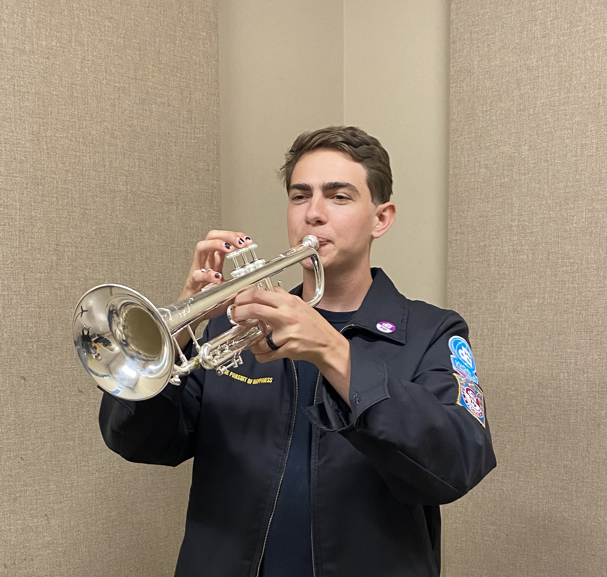

Oliver's Homepage

About Me
I've played trumpet for 12 years, and I'm in three of the school's ensembles: Jazz Big Band, Jazz Combos, and Wind Ensemble. I've taken Big Band 12 times since starting here at UCSC I use to be in Robotics Engineering before swiching to AGPM this year.